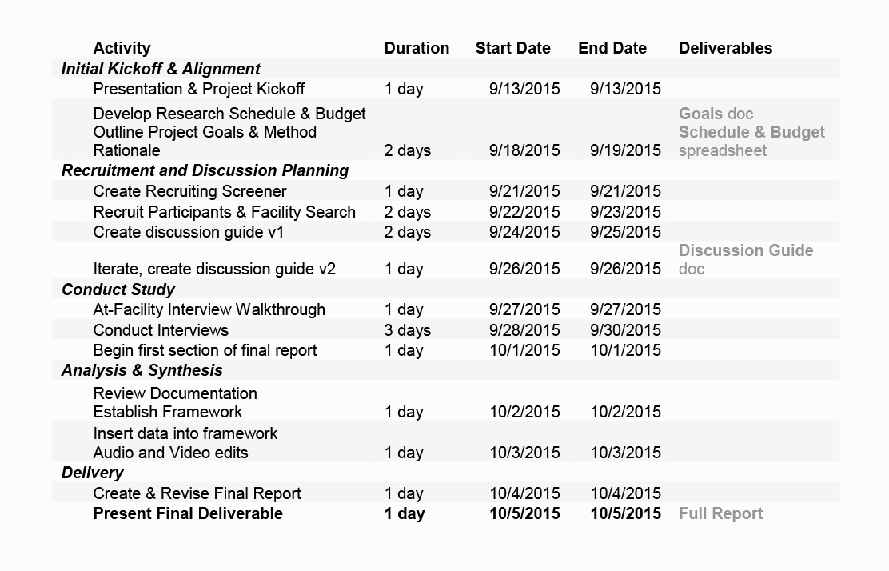
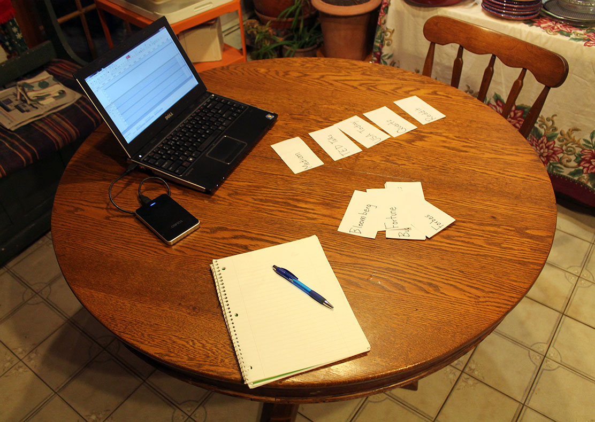

October, 2015
In my Field Methods in Human Computer Interaction class at Bentley University's MS in Human Factors in Information Design program, our final report consisted of interviewing 5 users based on a client project. The client was a popular business magazine, and we would be mainly extrapolating findings on how users trust resources (such as magazines, mentors, or news sources). After the interviews, we developed personas based on our findings that represented the company's users.
After the client briefing, I came up with a set of research questions that would drive the project and meet the company's goals:
Time: I had less than a month to complete the project while scheduling around work and two other classes. Adhering to a project schedule ensured I would be able to hand in my deliverables on time.
Client Accessibility: There were over 20 students in the class, so any questions for the client would have to be directed through our professor. Many questions were asked during the client briefing to avoid excessive communication later in the project.
Class Requirements: We were required to use 5 participants for our research. More participants would have been ideal for proper persona development.
This was an individual project that would include a schedule, budget, user research study, analysis, personas, recommendations, and a final report deliverable to be submitted to the client.

To extract more nuanced ideas about people’s trust and exploration strategies, I chose to conduct one-on-one interviews that might unveil personal stories that may have been withheld in a focus group setting. I created a thorough discussion guide that was divided into three sections: Trust & Loyalty, Ranking Activity, and Exploration Styles.
The “trust & loyalty” and “exploration styles” sections were conducted in a traditional interview format. Questions were asked to unveil behaviors and personal stories around these subjects rather than the participant’s attitudes. For example, in the “trust & loyalty” section, participants were asked about their allegiance to college sports teams, mentors, and frequented restaurants.
The ranking activity was meant to break up the the 1-hour interview by asking the participant to arrange a set of 15 cards with information sources on them (e.g. CNN, BuzzFeed, and Reddit) from most to least trustworthy, then from most to least enjoyable.

Resources
“I use Stack Overflow every single day. I wouldn’t be where I am without that website… You have really good developers teaching you essentially by example.”
All of the participants mentioned people as being reliable resources for upward mobility in their careers, often by asking questions or giving career guidance. The participants often mentioned that if they could avoid asking a simple question to co-workers or superiors in the workplace, they would do so and try to find the answer elsewhere before asking.
Wanderers
“I think of things that wouldn’t lie to me… something that I knew I would get the same answer every time I asked a question to it"
Comfort is important for them in order to trust something
Looks for truth, but understands and values opinions from sources
More thorough planning of the analysis stage would have created a more efficient research process.
Examining prior academic research on the themes of trust and loyalty could have supported some of the user interviews and analysis.
Starting with a well-defined project schedule kept me on track to submit deliverables on time while allowing room for creative exploration and spontaneity.
Trends were found among the 5 participants despite the small sample size required by the class.
The discussion guide was well composed to keep participants engaged as well as to answer the research questions.
The final report was well-organized with interesting findings, and the professor also commented that it was well executed.


{kind=link}
{kind=link}